Wij ontwerpen ruimtes waar mensen zich goed in voelen. Elk project begint met de vraag wat de plek al vertelt, en eindigt in een eenvoudig, eigen antwoord.
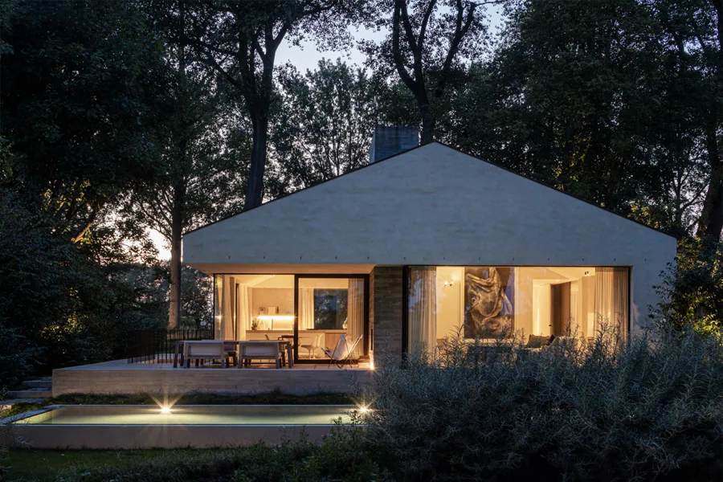
BAWADAWoning, Damme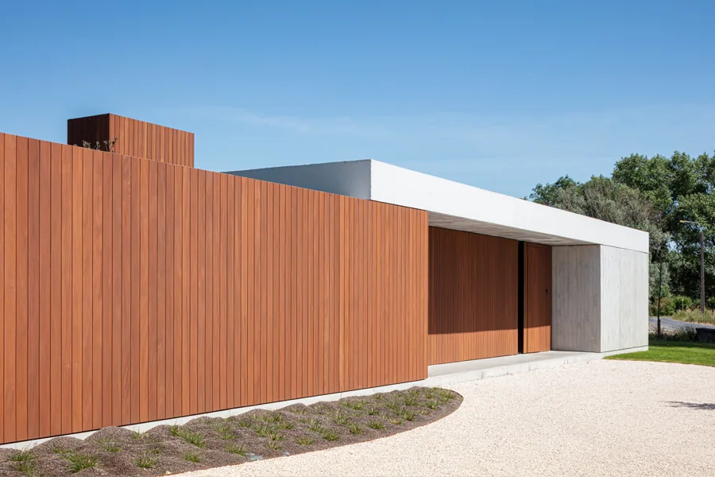
BOPOROWoning, Roeselare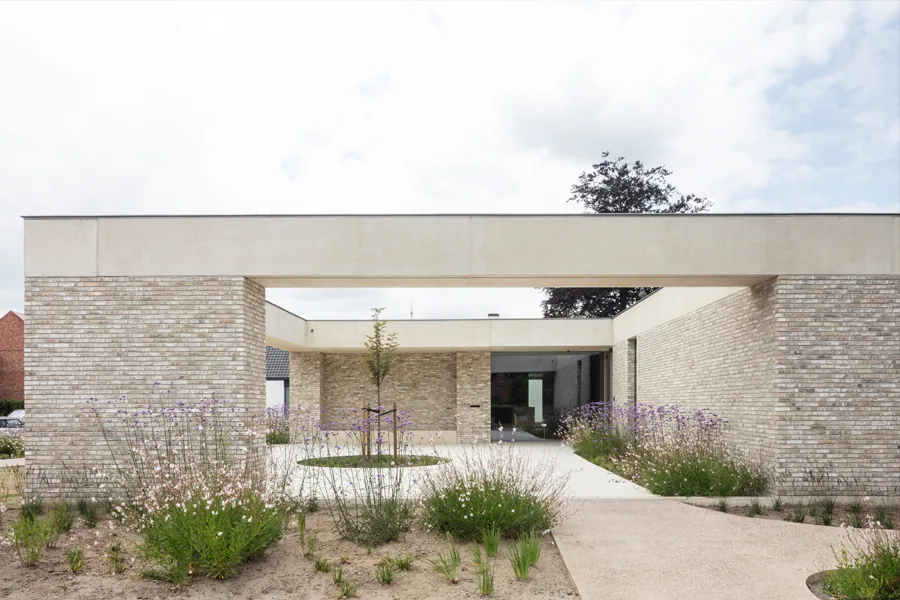
WISTIKBib en kinderdagverblijfNet zoals een biotoop, heeft een gebouw een architoop. Wij zoeken wat de plek eigen maakt, en bouwen daarop verder.
Aan elk project gaat een grondig onderzoek vooraf. We kijken naar de schaal van de omgeving, de vorm, de organisatie en het materiaal, tot in het kleinste detail.
Samen met u stellen we uw wensen in vraag, op een goede manier. Zo komen we tot een antwoord dat eenvoudig is en toch helemaal bij u en uw plek past.
Kies een project om het te bekijken.
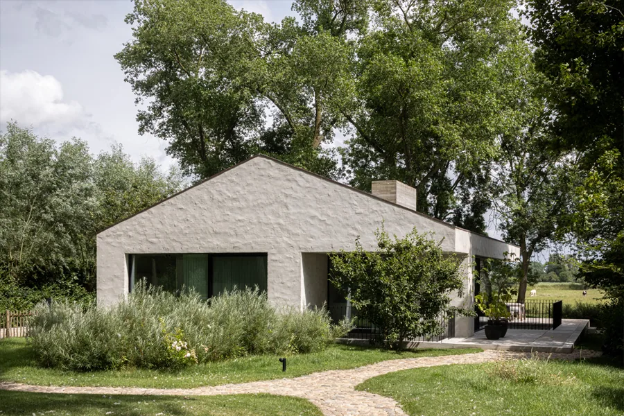
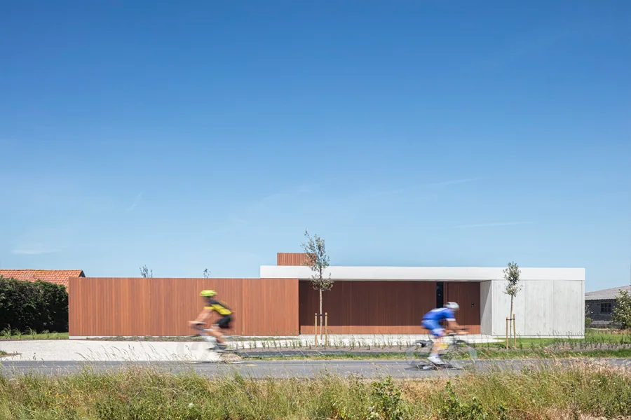
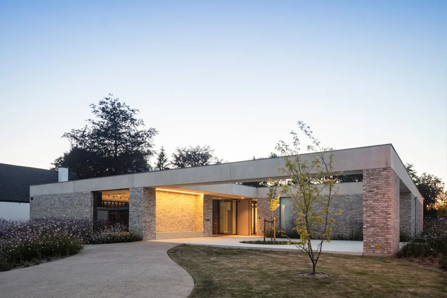
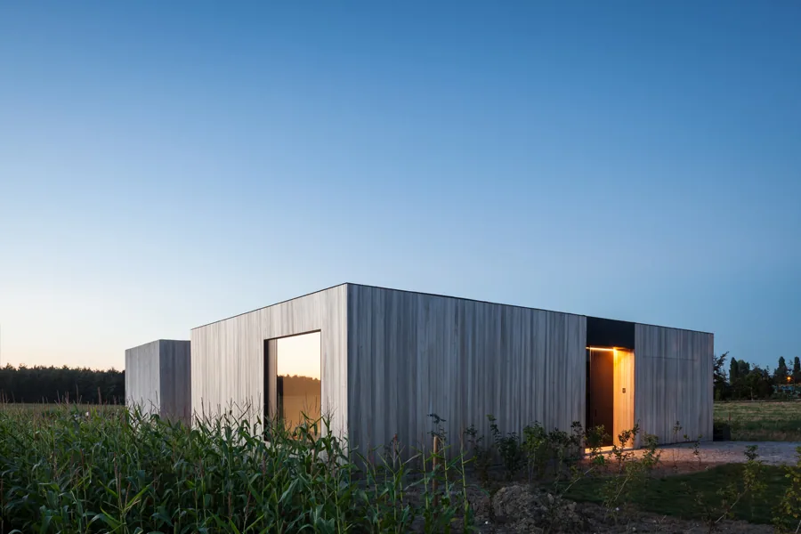
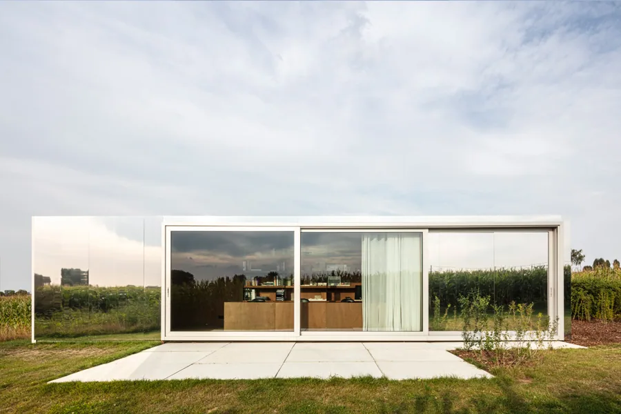
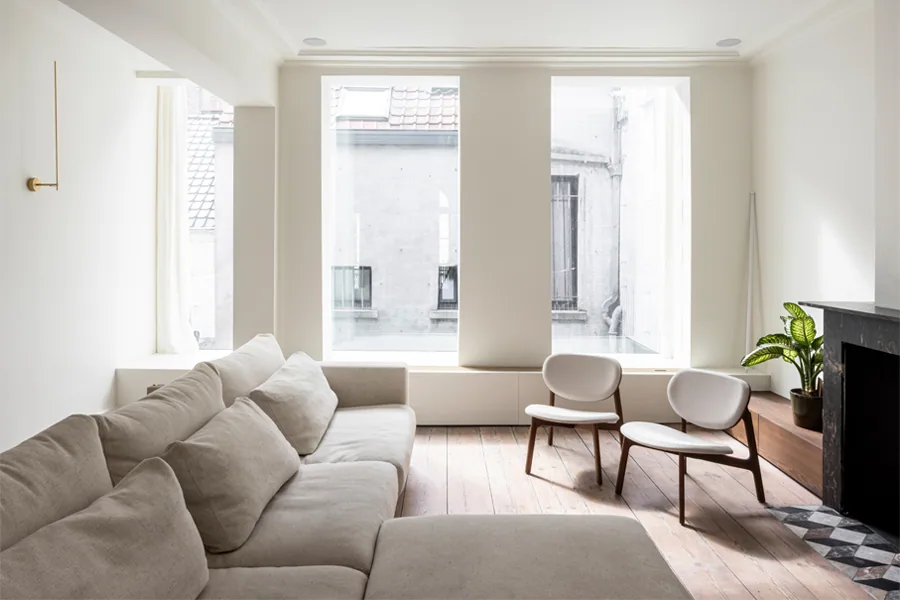
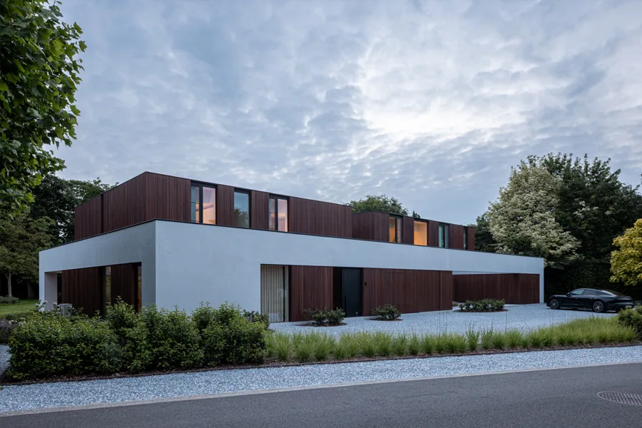
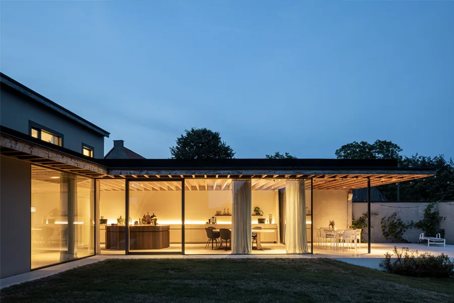
Een lage woning in lichte baksteen, helemaal gericht op de tuin. In samenwerking met landschapsarchitect burO Groen.
U vertelt over uw plannen, uw perceel en uw budget. Wij luisteren, en stellen de vragen die ertoe doen.
We bestuderen de plek: schaal, licht, oriëntatie en wat er rondom staat. Daaruit groeit het concept.
Van schets tot uitgewerkt plan, met materialen en details. U ziet elke stap en beslist mee.
We volgen de werf op tot de oplevering. Eén van onze klanten bouwde zo op ongeveer één jaar, zonder noemenswaardige problemen.
Na eerdere nominaties in dezelfde categorie.
Met daarbij een eervolle vermelding van de vakjury.
Projecten opgenomen in meerdere edities van het boek.
TOOP is erin geslaagd om ons huis te ontwerpen en bouwen op ongeveer één jaar, zonder noemenswaardige problemen. Top architectenbureau.
Laurent tekende voor ons onze droomwoning. Ongetwijfeld een van de meest getalenteerde architecten.
Een eerste gesprek is vrijblijvend. Neem gerust uw plannen, foto's van het perceel of een paar beelden die u aanspreken mee.
Ja. Naast nieuwbouw tekenen we ook verbouwingen en renovaties, en interieurs. Een bestaand gebouw heeft vaak al een sterk karakter om op verder te bouwen.
Wat u heeft: een plan van het perceel, foto's, een idee van uw budget en beelden die u aanspreken. Niets is verplicht.
Ja. We volgen de uitvoering op tot de oplevering, zodat het ontwerp ook in de details klopt.
Waar het project erom vraagt, werken we samen met landschapsarchitecten en andere ontwerpers. Zo kwamen onder meer BAWADA en CASWES tot stand.
DIEen woordje uitleg van Stijn
Ik maakte deze demo voor u om te tonen wat er kan. Na een kort gesprek maak ik er iets veel persoonlijkers van, helemaal naar uw wens.
Vrijblijvend. Ik kom langs of we bellen.
Op maat, op uw eigen domein.
Geen voorschot. U betaalt pas als alles klaar is.
Hosting, domeinnaam en kleine wijzigingen, zoals nieuwe openingsuren.
Omdat een voorbeeld meer zegt dan een mail. Zo ziet u meteen wat er kan, en het kost u niets.
Nee. Het gesprek is vrijblijvend. Vindt u het niks, dan is het daarmee gedaan.
Na ons gesprek staat uw site binnen 10 tot 14 dagen online.
Zeker. Uw domeinnaam kan gewoon blijven, de nieuwe site komt in de plaats van de oude.
Nee, dat doe ik op basis van ons gesprek. Eigen foto's zijn mooi meegenomen, maar niet nodig om te starten.